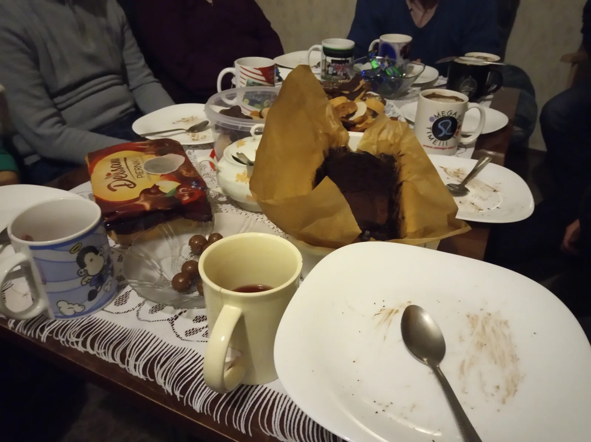
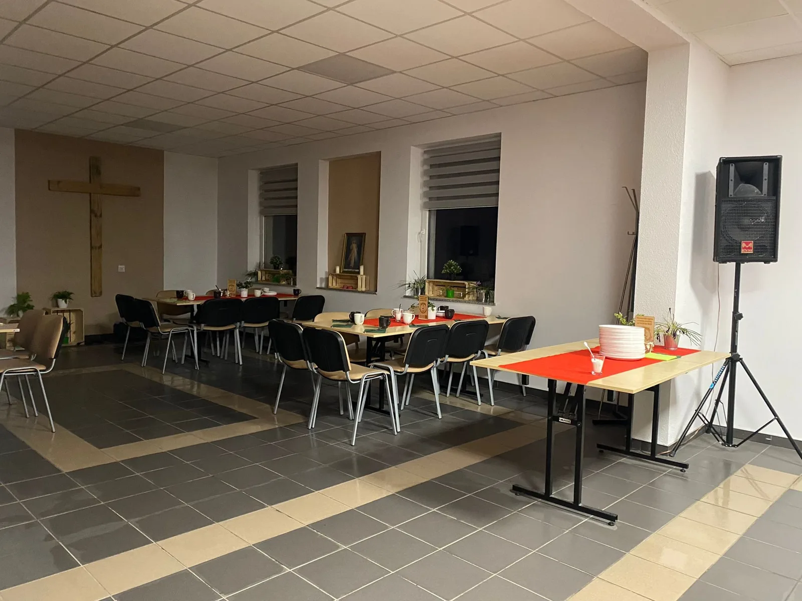
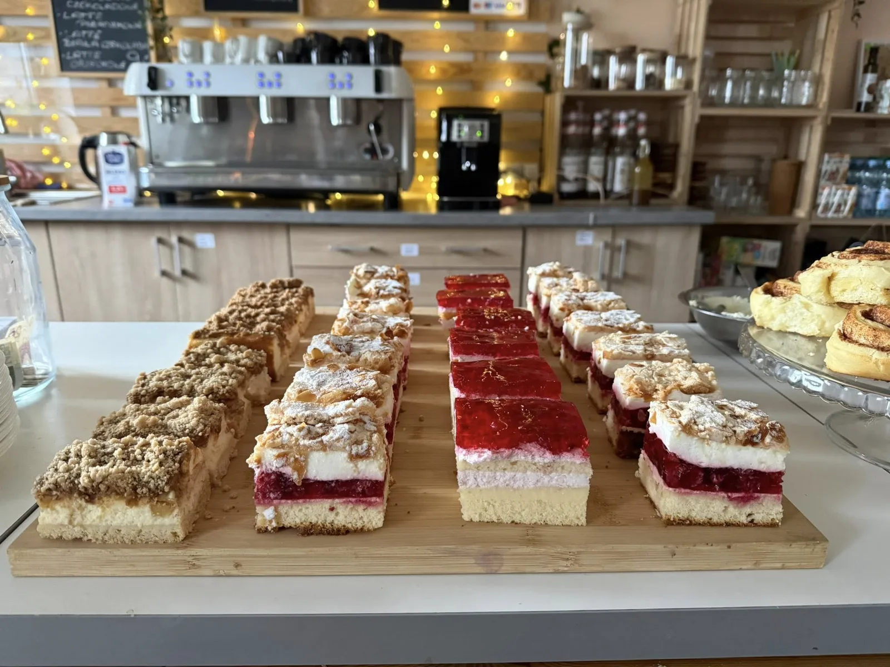

Proste narzędzie ewangelizacji
Kolacja, film i rozmowa. Taki rytm jest czytelny dla ekipy i dla osoby, którą zapraszamy pierwszy raz.
Dlaczego wybraliśmy Alpha?
Szukaliśmy sposobu, który pozwoli zaprosić ludzi bez kościelnego języka i bez stawiania im warunków na wejściu. Alpha dała nam stół, film, rozmowę i czas potrzebny do zbudowania zaufania.

Prosty początek
Alpha nie wymaga napisania całego programu od początku. Materiały filmowe prowadzą przez kolejne tematy, a zespół może skupić się na gościnności i ludziach.
Kolacja, film i rozmowa. Taki rytm jest czytelny dla ekipy i dla osoby, którą zapraszamy pierwszy raz.
Można przyjść z pytaniami, wątpliwościami albo po prostu z ciekawości. Nie trzeba znać kościelnych pojęć ani mieć gotowych odpowiedzi.
Alpha może zacząć się przy jednym stole w domu, a później urosnąć do wielu grup w dużej sali.
Filmy, szkolenia oraz doświadczenie innych zespołów pozwalają zacząć bez budowania wszystkiego samodzielnie.

Miejsce rozmowy
Nie każda rozmowa o wierze mieści się po Mszy albo w krótkim spotkaniu kancelaryjnym. Alpha daje kilka tygodni wspólnego stołu, słuchania i pytań. Nikt nie musi zabierać głosu, a żadnego szczerego pytania nie uznajemy za niewłaściwe.
„Wiedziałam, że mogę powiedzieć, co myślę i nikt mnie nie oceni”.
Jessica, 22 lata · Alpha w Lubecku
Od uczestnika do gospodarza
Uczestnik kolejnej edycji może wejść do ekipy, przygotować stół, przyjąć gości albo poprowadzić małą grupę. Odpowiedzialność rośnie stopniowo i w praktyce. W ten sposób pojawiają się nowi posługujący i liderzy.
Zobacz cały cykl odnowyCo zobaczyliśmy w Lubecku?
Kolejne edycje nie kończyły się na ostatnim spotkaniu. Z relacji, wiary i odpowiedzialności wyrastały następne inicjatywy.

Osoby, które wcześniej były gośćmi, zaczęły przygotowywać kolejne edycje i brać odpowiedzialność za innych.
Ten sam prosty format otworzył przestrzeń dla młodych i ich pytań.
W parafii pojawiły się kolejne formy spotkania i ewangelizacji, między innymi Godly Play.
Własne doświadczenie pozwoliło nam szkolić zespoły i towarzyszyć im przy pierwszych edycjach.
Dlaczego przy niej zostaliśmy?
Nie chodzi tylko o sprawny format. Najważniejsze jest to, co zaczyna dziać się w człowieku i między ludźmi.
„Alpha dała mi nowych znajomych, nowe siły, więcej wiary. Dała mi czwartek, na który czekałem cały tydzień”.
„Nacisnęłam hamulec. Pewne rzeczy stały się mniej ważne. Znów zaczęłam rozmawiać z Bogiem”.
„Alpha dała mi drugie życie”.